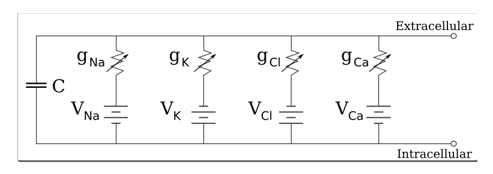
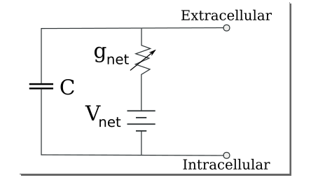

Neurons for Computer Geeks - Part V: Yet More Theory
Monday, September 07, 2015
Welcome to part V of a multi-part series on modeling neurons. In part IV we introduced the RC Circuit by making use of the foundations we painstakingly laid in previous posts. In truth, we could now move on to code and start looking at the Leaky Integrate-and-Fire (LIF) model, since we've already covered most required concepts. However, we are going to do just a little bit more theory before we get to that.
The main reason for this detour is that I do not want to give you the impression neurons are easy; if there is one thing that they are not is easy. So we're going to resume our morphological and electrical exploits to try to provide a better account of the complexity inside the neuron, hopefully supplying enough context to appreciate the simplifications done in LIF.
The content of this post is highly inspired from Principles of Computational Modelling in Neuroscience, a book that is a must read introduction if you decide to become serious on this subject. If so, you may also want to check the Gerstner videos: Neural networks and biological modeling.
But you need not worry, casual reader. Our feet are firmly set in layman's land and we'll remain so until the end of the series.
Brief Context on Modeling
Before we get into the subject matter proper, I'd like us to ponder a few "meta-questions" in terms of modeling.
Why Model?
A layperson may think that we model neurons because we want to build a "computer brain": one that is similar to a real brain, with its amazing ability to learn, and one which at some point may even think and be conscious. Hopefully, after you finish this series of posts, you will appreciate the difficulty of the problem and see that it's not very likely we'll be able to make a "realistic" "computer brain" any time soon - for sensible values of "realistic", "computer brain" and "any time soon".
Whilst we have good models that explain part of the behaviour of the neuron and good models for neural networks too, it is not the case that we can put all of these together to form some kind of "unified neuron model", multiply it by 80 billion, add a few quadrillion synapses and away we go: artificial consciousness. Given what we know at the moment, this approach is far too computationally demanding to be feasible. Things would change if there was a massive leap in computational power, of course, but not if they stay at present projections - even with Moore's Law.
So if we are not just trying to build a computer brain, then why bother? Well, if you set your sights a little lower, computational models are actually amazingly useful:
- one can use code to explore a small portion of the problem domain, making and validating predictions using computer models, and then test those predictions in the lab with real wetware. The iterative process is orders of magnitude faster.
- computer models are now becoming quite sophisticated, so in some cases they are good representations of biological processes. This tends to be the case for small things such as individual cells or smaller. As computers get faster and faster according to Moore's Law, the power and scope of these models grows too.
- distributing work with Free and Open Source Software licences means it is much easier for researchers to reproduce each others work, as well as for them to explore avenues not taken by those who did the work originally, speeding things up considerably. Standing on the shoulders of giants and all that.
What Tools Do We Model With?
The focus of these posts is on writing models from scratch, but that's not how most research is conducted. In the real world, people try their best to reuse existing infrastructure - of which there is plenty. For example there is NEURON, PyNN, Brian and much more. Tools and processes have evolved around these ecosystems, and there is a push to try to standardise around the more successful frameworks.
There is also a push to find some kind of standard "language" to describe models so that we can all share information freely without having to learn the particulars of each others representations. The world is not quite there yet, but initiatives such as NeuroML are making inroads in this direction.
However, the purpose of our this series is simplification, so we will swerve around all of this. Perhaps material for another series.
At What Level Should One Model?
A related question to the previous ones - and one that is not normally raised in traditional software engineering, but is very relevant in biology - is the level of detail at which one should model.
Software Engineers tend to believe there is a model for a problem, and once you understand enough about the problem domain you will come up with it and all will be light. Agile and sprints are just a way to converge to it, to the perfection that exists somewhere in the platonic cloud. Eric Evans with DDD started to challenge that assumption somewhat by making us reflect on just what it is that we mean by "model" and "modeling", but, in general, we have such an ingrained belief in this idea that is very hard to shake it off or to even realise the belief is there in the first place. Most of us still think of the code representation of the domain model as the model - rather than accept it is one of a multitude of possible representations, each suitable for a given purpose.
Alas, all of this becomes incredibly obvious when you are faced with a problem like modeling a neuron or a network of neurons. Here, there is just no such thing as the "right model"; only a set of models at a different perspectives, each with a different set of trade-offs, and any of them only make sense in the context of what one is trying to study. It may make sense to model neurons like networks, ignoring the finer details of each one and looking at their behaviour as a group, or it may make sense to model individual bits of the neuron as an entity. What makes it "right" or "wrong" is what it is that we are using the model for and how much computational power one has at one's disposal.
Having said all of that, lets resume our morphology adventures.
Electricity and Neurons
We started off with an overview of the neuron and then moved over to lots and lots of electricity; now it's time to see how those two fit together.
As we explained in part I, there is a electric potential difference between the inside of the cell and the outside, called the membrane potential. The convention to compute this potential is to subtract the potential inside the cell to the potential outside the cell; current is positive when there is a flow of positive charge from the inside to the outside and negative otherwise. Taken into account these definitions, one should be able to make sense of the resting membrane potential: it is around -65mv. But how does this potential change?
Ion Channels
Earlier, we spoke about ions - atoms that either lost or gained electrons and so are positively or negatively charged. We also said that, in general, the cell's membrane is impermeable, but there are tiny gaps in the membrane which allow things in and out of the cell. Now we can expand a bit further. Ion channels are one such gap, and they have that name because they let ions through. There are many kinds of ion channels. One way of naming them is to use the ion they are most permeable to - but of course, this being biology, the ion channels don't necessarily always have a major ion they are permeable to.
Another useful categorisation distinguishes between passive and active ion channels. Active channels are those that change their permeability depending on external factors such as the membrane potential, the concentration of certain ions, and so on. For certain values they are open - i.e. permeable - whereas for other values they are closed, not allowing any ions through. Passive channels are simpler, they just have a fixed permeability behaviour.
There are also ionic pumps. These are called pumps because they take one kind of ion out, exchanging it for another kind. For instance, the sodium-potassium pump pushes potassium into the cell and expels sodium out. A pump has a stoichiometry, which is a fancy word to describe the ratio of ions being pumped in and out.
Complexity Starts To Emerge
As you can imagine, the key to understating electric behaviour is understanding how these pesky ions move around. Very simplistically, ions tend to move for two reasons: because there is a potential difference between the inside and the outside of the cell, or because of the concentration gradient of said ion. The concentration gradient just means that, left to their own devices, concentration becomes uniform over time. For example, if you drop some ink in a glass of water, you will start by seeing the ink quite clearly; given enough time, the ink will diffuse in the water, making it all uniformly coloured. The same principle applies to ions - they want to be uniformly concentrated.
It should be fairly straightforward to work out that a phenomenal number of permutations is possible here. Not only do we have a great number of channels, all with different properties - some switching on and off as properties change around the cell - but we also have the natural flow of ions being affected by the membrane's potential and the concentration gradient, all of which are changing over time. To make matters worse, factors interact with each other such that even if you have simple models to explain each aspect individually, the overall behaviour is still incredibly complex.
Now imagine more than 50 thousand such ion channels - of over one hundred (known) types - in just a single neuron and you are starting to get an idea of the magnitude of the task.
Equivalent Circuit for a Patch of Membrane
But lets return to simplicity. The very clever people determined that it is possible to model the behaviour of ions and its electric effects by thinking of it as an electric circuit. Taking a patch of membrane as an example, it can be visualised as an electric circuit like so:

Figure 1: Source: Wikipedia, Membrane Potential
What this diagram tells us is that the membrane itself acts as a capacitor, with its capacitance determined by the properties of the lipid bilayer. We didn't really discuss the lipid bilayer before so perhaps a short introduction is in order. The membrane is made up of two sheets of lipids (think fatty acids), which when layered so, have interesting properties: the outside of the sheets are impermeable to most things such as water molecules and ions. The membrane itself is pretty thin, at around 5nm.
The membrane capacitance is considered constant. We then have a series of ion channels: sodium, potassium, chlorine, calcium. Each of these can be thought of as a pairing of a resistor with variable conductance coupled with a battery. Note that the resistor and the battery are in series, but the ion channels themselves form a parallel circuit. The voltages for each pathway are determined by the different concentrations of the ion inside and outside the cell.
If we further assume fixed ion concentrations and passive ion channels, we can perform an additional simplification on the circuit above and we finally end up with an RC Circuit:

Figure 2: Source: Wikipedia, Membrane Potential
The circuit now has one resistance, which we call the membrane resistance, and a membrane battery.
What next?
Hopefully you can start to see both the complexity around modeling neurons and the necessity to create simpler models to make them computationally feasible - just look at the amount of simplification that was required for us to get to an RC Circuit!
But at least we can now look forward to implementing LIF.
| Back to previous chapter | Back to chapter index. | Forward to next chapter |